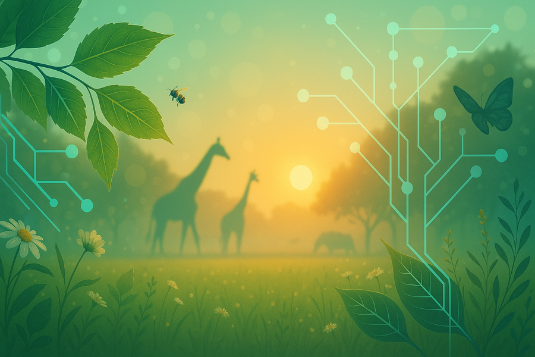

This article was updated on March 12, 2026, to reflect a change in Hilmar Lapp’s affiliation, replacing Duke University with Neuromatch.
Researchers at the Imageomics Institute will collaborate with the ABC Global Center and partners from Battelle Memorial Institute/NEON, Neuromatch and NatureServe on a $600,000 award from the National Science Foundation’s FAIROS Open Science program to prototype an AI-ready research data infrastructure for ecology and biodiversity. The Ohio State share is $440,928.
The project goal is to make nature data easy to find, share, and plug into AI so scientists can spot problems sooner and protect wildlife and ecosystems faster. The initiative is led by Ohio State's Tanya Berger-Wolf (PI), with co-PI's Arnab Nandi (Ohio State), Eric Sokol and Christine Laney (Battelle/NEON), Hilmar Lapp (Neuromatch), and Lily Tarjan (NatureServe).
Imageomics and the affiliated ABC Global Center are collaborating organizations, contributing domain expertise and use cases across multimodal biodiversity data.
The team will design a distributed, AI-ready data infrastructure that unifies access to diverse ecological data through shared schemas, aligned taxonomies and ontologies, and machine-accessible interfaces (APIs). Planned deliverables include a dynamic inventory and map of data sources with AI-readiness assessments, plus exemplar use cases for evaluation.
Broader goals include improving discoverability and interoperability across institutions, accelerating open and reproducible AI-enabled science, and advancing training and workforce development.
Biodiversity is the foundation of life on Earth, but the data we need to understand and protect it are fragmented and hard to use,” said Berger-Wolf. “By making biodiversity data FAIR and AI-ready, we are laying the groundwork for discoveries that will help us predict, preserve, and restore the natural world. This is about the future of science and the future of our planet.”
Editor’s note: This story corrects earlier posts to reflect that the award is a multi-institution collaboration (total $600,000), with Imageomics and ABC as collaborating organizations and Ohio State’s share at $440,928.